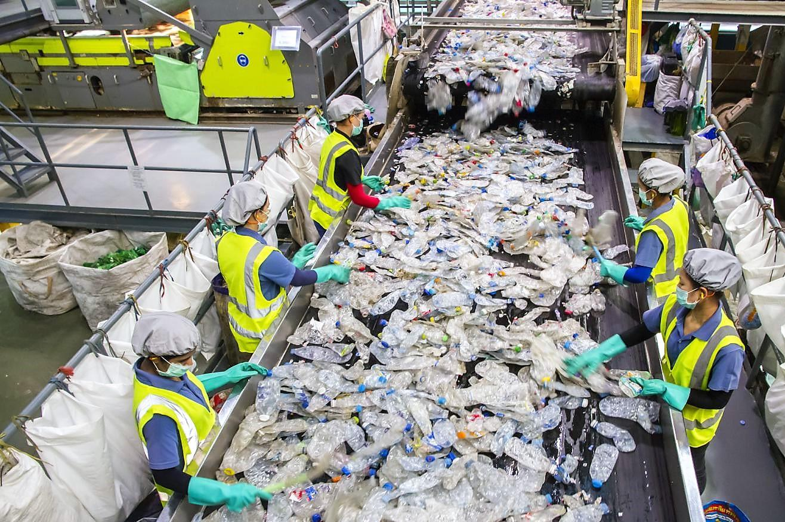

回收是資源循環的重要起點
PET 容器使用後，若符合所在地回收規定並妥善交付，便可能進入回收收集與分類流程。回收端會依材質、顏色、外觀及污染情形等條件進行辨識與分選，為後續再生處理做準備。
回收不是把所有垃圾放在一起。正確分類、乾淨交付與依規定處理，有助於提升回收物料的品質。

1. 使用後先整理
將容器內剩餘飲料或內容物倒空。若有明顯殘留，可依地方回收指引適度清理；避免讓液體或食物殘渣污染其他回收物。
2. 依規定分類交付
依居住地或回收場所公告的方式，將 PET 容器交給清潔隊資源回收車、指定回收點或其他合法回收管道。瓶蓋、標籤及其他附件是否需要分開，應以當地最新規定為準。
3. 收集與運送
回收物經收集後，會送往回收處理端。收集、壓縮、打包及運送方式會因地區與回收系統不同而有所差異。
4. 材質辨識與分選
處理端會將回收物依材質及品質條件分選，盡可能把 PET 容器與其他材質分開，並去除不適合後續處理的異物。分類品質會影響再生材料的品質與用途。
本階段流程簡圖
🧴
回收交付倒空並依規定分類🚛
收集運送送往回收處理端♻️
辨識分選挑出適合的 PET 物料各縣市、回收據點及不同產品的回收要求可能不同。瓶蓋、標籤與容器的處理方式，請以所在地政府或回收單位公告為準。
這一站的重點
回收階段的重點是正確交付與分類；分類越清楚、污染越少，越有利於後續再生處理。
小小檢查看看
交付 PET 容器回收前，最重要的一個處理動作是什麼？